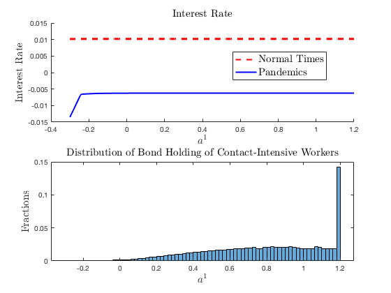

Guerrieri et al. (2020): Negative Supply Shocks That Cause Demand Shortages
The Model
In this timely and important contribution, Guerrieri, Lorenzoni, Straub, and Werning (2020) analyze the effects of supply shocks such as shutdowns, layoffs, and firm exits due to COVID-19. They show that in a two-sector model, these supply shocks can trigger changes in aggregate demand larger than the shocks themselves. This is the case when the elasticity of substitution across sectors is not too large and the inter-temporal elasticity of substitution is sufficiently high.
Their model is deterministic and the supply shock is unexpected. They also assume maximally tight borrowing constraint. We extend their model to allow for stochastic, recurrent shocks and more relaxed borrowing constraint. This extension can be solved easily using our toolbox.
We follow closely the notation in Guerrieri et al. (2020). The total population is normalized to one, with a fraction \(\phi\) of agents working in sector 1 and the remaining fraction \(1-\phi\) of agents working in section 2. We assume that workers are perfectly specialized in their sector. Sector 1 is the contact-intensive sector that is directly affected by the supply shock.
The labor endowment of workers in sector 2 is constant and is set to \(\bar{n}\), while the labor endowment of workers in sector 1 follows a two-point Markov process with state in \(\{1,2\}\), where \(1\) corresponds to normal times and \(2\) corresponds to pandemics. During normal times, their labor endowment is \(n_1=\bar{n}\), while when a supply shock hits, their labor endowment drops to \(n_1=\delta\bar{n}\) with \(\delta<1\). In the COVID-19 example, as sector 1 is contact-intensive and a fraction \(\delta\) of its production is shut down when the pandemic hits. On the other hand, sector 2 is unaffected. The transition matrix between these two states is
in which \(1-\pi_{1}\) is a small probability for the economy to enter the supply-driven crisis, and \(\pi_{2}\) is the probability for the crisis to last for one more period.
The production technology is linear in both sectors:
for \(j=1,2\). Competitive firms in each sector \(j\) hire workers at wage \(W_{jt}\) and sell their products at price \(P_{jt}\). Prices are flexible, and given the market structure we have \(P_{jt}=W_{jt}\). The consumer’s utility function is
in which
which features constant elasticity of subsitution \(1/\rho\) between the two goods and constant intertemporal elasticity of substitution \(1/\sigma\).
As in Guerrieri et al. (2020), here we set good 2 to be the numeraire, i.e., \(P_{2t}\equiv1\). Workers in sector \(j\) maximize (11) subject to
where they allocate their labor income and bond holding from the previous period, \(a_{t}^{j}\) among consumption goods produced in the two sectors and bond holding into the next period. Interest rate \(r_{t}\) is determined competitively.
In addition, we assume that the workers are subject to the following borrowing constraint:
Denote sector \(j\) workers’ Lagrangian multiplier for the budget constraint (12) as \(\beta^{t}\lambda_{t}^{j}\), and the multiplier for the borrowing constraint as \(\beta^{t}\mu_{t}^{j}\). The first-order conditions for the workers’ optimal decision are:
And we also have the market clearing conditions for bond and consumption good 2:
and the market clearing conditions of consumption good 1 is implied by Walras’ law.
We use \(a^1_t\) as the endogenous state variable and look for a recursive equilibrium as a mapping from \(\left(z_t,a^1_t\right)\) to the allocation and prices that satisfies the first-order conditions and market clearing conditions above.
Notice that by the pricing equation (14),
which means the consumption shares of workers in sector 1 are the same between these two consumption goods. Denote the consumption share of workers in sector 1 as \(\tilde{c}_{1t}\), then
which leads to
where \(Y_{t}=\left[\phi n_{1t}^{1-\rho}+\left(1-\phi\right)\bar{n}^{1-\rho}\right]^{\frac{1}{1-\rho}}\), and
In total, for each \(z_t\) and \(a^1_t\), the minimal equilibrium system can be represented by 5 unknowns: \(\left\{ \tilde{c}_{1t},a_{t+1}^{1},\mu_{t}^{1},\mu_{t}^{2},r_{t+1}\right\}\), and can be solved by a system of 5 equations: the budget of workers in sector 1, equation (12), and the FOC in equation (15), and slackness condition in equation (16) for \(j=1,2\).
Calibration
We use quarters for model periods and standard parameters in the literature. For preferences, we use \(\beta = 0.99\) as the quarterly discount factor. The inverse inter-temporal elasticity of substitution is set at \(\sigma = 0.5\) (strictly less than \(1\) as required by the analytical results Guerrieri et al. (2020) for supply shocks to trigger larger aggregate demand responses). We vary the inverse intra-temporal elasticity of substitution \(\rho\) between \(0.1\) and \(0.9\).
For labor market parameters, we normalize \(\bar{n}\) at \(1\). The share of the contact-intensive sector \(\phi\) is set at \(0.2\). We assume that when the pandemic shocks hit, labor supply in the contact-intensive sector declines by \(50\%\) (roughly consistent with the increase in unemployment claims in the U.S. during the pandemics). We assume that the pandemics last for 2 quarters on average, so \(\pi_2 = 0.5\) and \(\pi_1\) is chosen so that the economy stays in pandemics in around \(0.5\%\) of the times (consistent with historical frequency). Borrowing limit \(\bar{A}\) is set at \(30\%\) of the wage in normal times. For the benchmark results, we use \(\rho = 0.75>\sigma = 0.5\).
The gmod File and Results
The model can be solved with the following gmod file (GLSW).
1% Created: April-9-2020
2% This model generalizes the two-period model in Guerrieri et.al (2020) studying the macro effect of COVID-19 with recurrent shocks to labor supply
3
4% Parameters
5parameters beta rho sigma phi nbar delta Abar;
6beta = 0.99; % discount factor
7rho = 0.75; % 1/rho intratemporal elasticity
8sigma = 0.5; % 1/sigma intertemporal elasticity
9phi = 0.2; % share of sector 1
10nbar = 1; % normal labor endowment
11delta = 0.5; % fraction of labor endowment during crisis
12Abar = 0.3; % borrowing limit
13TolEq = 1e-8; % Solve with high adccuracy
14
15% Shocks
16var_shock n1;
17shock_num = 2;
18pi2 = 0.5; % the pandemic lasts for 2 quarters
19freq = 0.005; % frequency of pandemic: 0.5 percent of the time.
20pi1 = 1 - (freq/(1-freq))*(1-pi2);
21shock_trans = [pi1,1-pi1;
22 1-pi2,pi2];
23n1 = [nbar,delta*nbar];
24
25% Endogenous States
26var_state a1;
27Ngrid = 301;
28a1_lb = -Abar;
29a1_ub = (1-phi)*Abar/phi;
30a1 = linspace(a1_lb,a1_ub,Ngrid);
31
32% Last period
33var_policy_init c1_shr;
34inbound_init c1_shr 0 1;
35var_aux_init P1 log_lambda1 log_lambda2;
36
37model_init;
38 c1_1 = c1_shr*(phi*n1)/phi;
39 c2_1 = (1-c1_shr)*(phi*n1)/(1-phi);
40 c1_2 = c1_shr*((1-phi)*nbar)/phi;
41 c2_2 = (1-c1_shr)*((1-phi)*nbar)/(1-phi);
42
43 Y = (phi*n1^(1-rho) + (1-phi)*nbar^(1-rho))^(1/(1-rho));
44 lambda1 = (c1_shr/phi*Y)^(-sigma)*(Y/nbar)^rho;
45 lambda2 = ((1-c1_shr)/(1-phi)*Y)^(-sigma)*(Y/nbar)^rho;
46 log_lambda1 = log(lambda1);
47 log_lambda2 = log(lambda2);
48
49 % price of good 1
50 P1 = ((c1_1/phi)/(c1_2/(1-phi)))^(-rho);
51 % wage of sector 1
52 W1 = P1;
53 budget1_resid = P1*c1_1 + c1_2 - W1*n1 - a1;
54
55 equations;
56 budget1_resid;
57 end;
58end;
59
60var_interp log_lambda1_interp log_lambda2_interp;
61initial log_lambda1_interp log_lambda1;
62initial log_lambda2_interp log_lambda2;
63% Updates
64log_lambda1_interp = log_lambda1;
65log_lambda2_interp = log_lambda2;
66
67% Endogenous variables, bounds, and initial values
68var_policy c1_shr a1n mu1 mu2 r;
69inbound c1_shr 0 1;
70inbound a1n -Abar (1-phi)*Abar/phi;
71inbound mu1 0 1;
72inbound mu2 0 1;
73inbound r -0.5 0.5;
74
75% Other equilibrium variables
76var_aux a2 P1 log_lambda1 log_lambda2;
77
78model;
79 a2 = -a1*phi/(1-phi);
80 c1_1 = c1_shr*(phi*n1)/phi;
81 c2_1 = (1-c1_shr)*(phi*n1)/(1-phi);
82 c1_2 = c1_shr*((1-phi)*nbar)/phi;
83 c2_2 = (1-c1_shr)*((1-phi)*nbar)/(1-phi);
84
85 Y = (phi*n1^(1-rho) + (1-phi)*nbar^(1-rho))^(1/(1-rho));
86 lambda1 = (c1_shr/phi*Y)^(-sigma)*(Y/nbar)^rho;
87 lambda2 = ((1-c1_shr)/(1-phi)*Y)^(-sigma)*(Y/nbar)^rho;
88 log_lambda1 = log(lambda1);
89 log_lambda2 = log(lambda2);
90
91 % price of good 1
92 P1 = ((c1_1/phi)/(c1_2/(1-phi)))^(-rho);
93 % wage of sector 1
94 W1 = P1;
95
96 log_lambda1Future' = log_lambda1_interp'(a1n);
97 log_lambda2Future' = log_lambda2_interp'(a1n);
98 lambda1Future' = exp(log_lambda1Future');
99 lambda2Future' = exp(log_lambda2Future');
100
101 budget1_resid = P1*c1_1 + c1_2 + a1n/(1+r) - W1*n1 - a1;
102 euler_residual = 1 - beta*(1+r) * GDSGE_EXPECT{lambda1Future'}/lambda1 - mu1;
103 euler_residua2 = 1 - beta*(1+r) * GDSGE_EXPECT{lambda2Future'}/lambda2 - mu2;
104
105 a2n = -a1n*phi/(1-phi);
106 slackness1 = mu1*(a1n + Abar);
107 slackness2 = mu2*(a2n + Abar);
108 equations;
109 budget1_resid;
110 euler_residual;
111 euler_residua2;
112 slackness1;
113 slackness2;
114 end;
115end;
116
117simulate;
118 num_periods = 10000;
119 num_samples = 20;
120 initial a1 0;
121 initial shock 1;
122
123 var_simu a2 P1 r c1_shr;
124
125 a1' = a1n;
126end;
With the generated files returned by the online compiler, we can run the iter_GLSW procedure to solve the policy iterations, and then pass the converged solutions to the simulate_GLSW procedure to simulate the ergodic set of the model.
We first solve the policy iterations by calling iter_GLSW in MATLAB, which produces
>> IterRslt = iter_GLSW;
Iter:10, Metric:0.00484804, maxF:8.57919e-09
Elapsed time is 0.170275 seconds.
...
Iter:1289, Metric:8.94807e-09, maxF:9.65947e-09
Elapsed time is 0.079467 seconds.
Then we pass the converged solutions to simulate_GLSW, which produces (depending on your random seed; set rng(0823) to produce the exact results below)
>> SimuRslt = simulate_GLSW(IterRslt);
Periods: 1000
shock a1 a2 P1 r c1_shr
1 0.3994-0.09985 1 0.01018 0.2006
Elapsed time is 0.653297 seconds.
...
Periods: 10000
shock a1 a2 P1 r c1_shr
1 1.18 -0.2951 1 0.01018 0.2023
Elapsed time is 0.761543 seconds.
Then we can inspect the policy functions for interest rate and the stationary distribution of workers 1’s bond holding
>> figure; plot(IterRslt.var_state.a1,IterRslt.var_policy.r);
figure; histogram(SimuRslt.a1);
With some cosmetic modifications we get the following figure.
{kind=link}
The upper panel in the figure shows the interest rate as a function of the endogenous state variable \(a^1_t\) in normal times (\(z=1\)) and during pandemics (\(z=2\)). Interest rate is lower during pandemics, which reflects that the aggregate demand response outweighs the supply shock, a result emphasized in Guerrieri et al. (2020). In addition, the figure also shows that the effect is stronger when the net worth of workers in the contact-intensive sector is low. The lower panel plots the ergodic distribution of bond holding of workers in the contact_intensive sector. The possibility of pandemics leads these workers to do precautionary saving, sometimes up to the borrowing limit of workers in sector 2. However, the precautionary saving does not undo the results in Guerrieri et al. (2020).
Starting from the model’s ergodic set, we can simulate the generalized impulse response functions by comparing two sets of sample paths drawn from the model’s ergodic set: one benchmark,
the other with the pandemic shock hitting at the first period and the transition of the exogenous shock turned on. Download the MATLAB script file that calls the toolbox codes to simulate the
generalized impulse response functions main_simulate_irf.m.

As shown, while interest rate reverts relatively quickly to the pre-pandemic level after the shock, workers in sector 1 suffer from a persistent, long-lasting wealth lost.
To further investigate the robustness of the results, the following figure plots the average interest rate before and after the pandemic shocks hit the economy as we vary \(\rho\). The figure shows that when \(\rho>\sigma\) (more precisely \(1/\rho<1/\sigma\)), interest rate drops when the pandemic shock hits, while it rises when \(\rho<\sigma\) (\(1/\rho>1/\sigma\)). This is exactly the result discussed in Guerrieri et al. (2020).